Reviewing All 40 of the PAS International Rudiments Because I Can’t Help Myself
Posted on July 31, 2022
Despite how often I maintain that the rudiments really aren’t important, they sure do live in my head rent–free. I guess as long as other drummers insist upon some tenuous importance of these things, I’m going to opine on them. Are there more important things to write about? Probably, but Todd Bishop wrote an article like this, and EMC Productions did a tier ranking, so… here we are.
I’ve presented the rudiments as they appear on the list of 40, and I’m evaluating them from the perspective of a drum set player (that is, what’s good for creating licks, grooves, and fills). Let’s get started.
№ 1: Single Stroke Roll
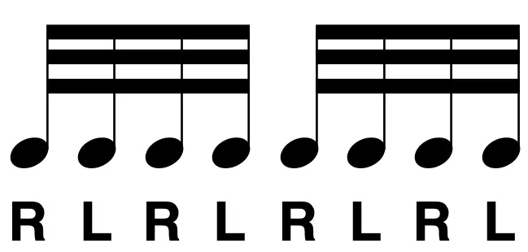The most basic and essential of all drumming motions. Pretty much every percussion instrument makes use of singles, although on the concert snare drum it’s somewhat overshadowed by the buzz roll. Fast singles aren’t a conceptually interesting thing, and many drummers deride them… but it’s an important skill to me.
№ 2 & 3: Single Stroke Four, Single Stroke Seven
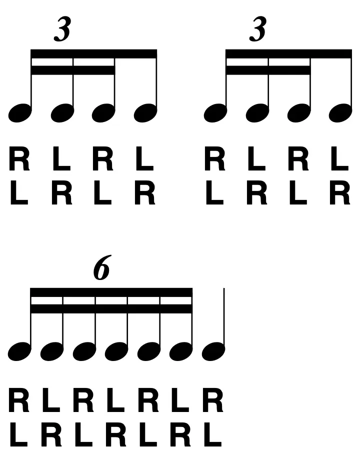We’re in the weeds now. I really don’t when these things were made (they aren’t on the list of 26), and I also don’t know why. There’s something very contrived about them; many drummers would recognize these as a “four stroke ruff”, “seven stroke ruff”, etc. I already wrote a whole post about that debacle, and these two licks on the list of 40 are very different from the ruff of yesteryear. With no accents or any sense of ornamentation, I don’t know what the point of these two licks is and how they were developed. They are just rhythms more than anything else, and I never play them as written. Nobody really does.
Many have also wondered why there’re only two of these. There’s some precedent for several others. Why no three? What about five and nine? I don’t get it.
№ 4: Multiple Bounce Roll
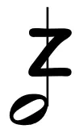Another essential motion. Well… kind of. The sound of the concert snare drum is the sound of the buzz roll, but it’s becoming an increasingly niche thing for other percussion disciplines. This topic probably deserves its own post, since the buzz roll doesn’t really have a place in modern drumming. In the 21st century, I rarely see it used in drums corps or on the drum set. That’s not that surprising, since these players don’t really have to worry about playing unmetered strokes, which is how the buzz roll works. I can think of many modern drumming heroes that have never played a buzz roll on an album.
№ 5: Triple Stroke Roll
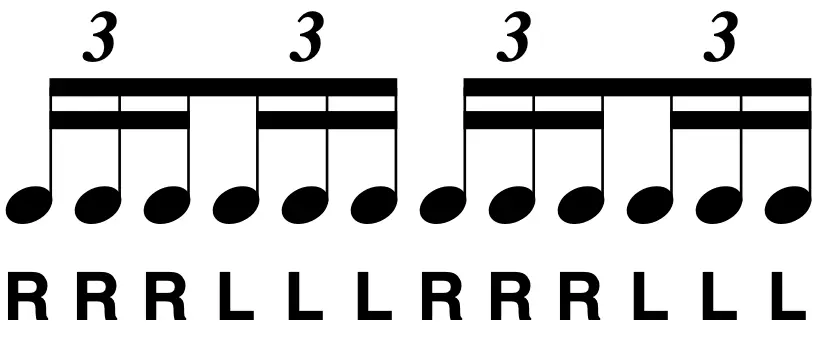Straight up, this is the dumbest rudiment. It’s very obviously a drum crops thing which looks cool, and that’s really the only situation I see it used. I could never imagine a serious kit player using this, let alone a tympani player or the like.
There is some utility in playing repeated triple strokes off of one hand, but you’re better off just practicing the classic double beat/triple beat drill instead of hand–to–hand triplets, which is literally a waste of time.
№ 6: Double Stroke Open Roll
Another essential. Not as much versatility as singles, but more so than buzz strokes. If the sound of the concert snare drum is the buzz roll, then the sound of a drumline is a double stroke roll.
There aren’t many situations for a drum set player to use a long double stroke roll, but learning that skill still goes a long way for short rolls and drags.
№ 7: Five Stroke Roll
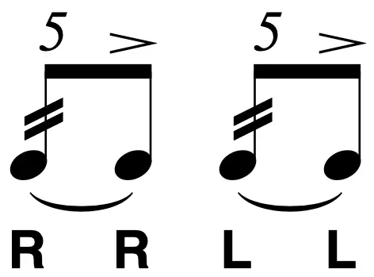As written, these don’t go a long way. You could end a phrase with two of them, playing the roll on the snare and the accent on a cymbal or something, which could be effective. It’s also a good lick to have in your pocket if you ever need to accent 8th note off beats as part of a figure.
The more popular interpretation is to use triplets, but you have to use them sparingly unless the tempo is really cooking. It’s always worth mentioning the tap roll, where you basically play the roll backward, starting with the accent. That could be a good way to embellish big quarter note hits.
№ 8: Six Stroke Roll
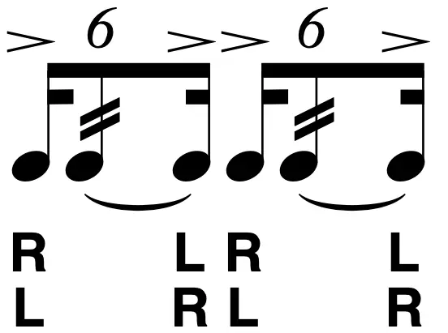Here we come to the world’s most misunderstood rudiment. It’s very rare to hear a drummer play this as written (or anything close to it). It’s much more common to play all of the strokes as even notes (typically with triplets), which is good fun… but it’s not a six stroke roll.
I actually think playing these as written is an underrated lick: it’s another fun way to emphasize big quarter note hits, and it works much better at slower tempos than the five stroke roll.
№ 9: Seven Stroke Roll
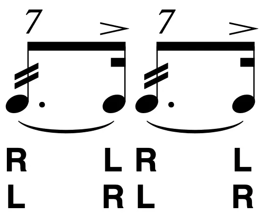As written, the accent is in kind of a weird spot; it could sound good but only in very specific situations. The tap variation seems much more common, again to emphasize quarter notes.
There’s the somewhat antiquated triplet variation, which I call a NARD seven stroke roll, since it’s all over the place in old NARD snare solos, going into a beat. Throwing one of these in a run of triplets could be a fun changeup.
№ 10–14: Nine Stroke Roll, Ten Stroke Roll, Eleven Stroke Roll, Thirteen Stroke Roll, Fifteen Stroke Roll
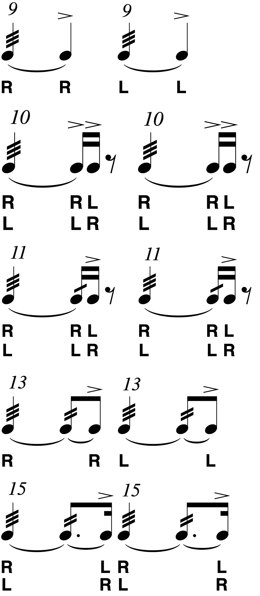I’m grouping these all together because they’re all kind of lame. These rolls can be fun to play on your pad, but in terms of making music, they’re too long to have any cool syncopation. And yet, they’re too short to build like a proper roll.
I have heard them used effectively, but the examples are few and far between. Towards the end of the big organ solo in “Squib Cakes”, David Garibaldi plays what’s basically a thirteen stroke roll around the drums. I regard it as one of his best moments. You could also play two counts of triple rolls ending with an accent, which would also be a thirteen stroke roll.
№ 15: Seventeen Stroke Roll
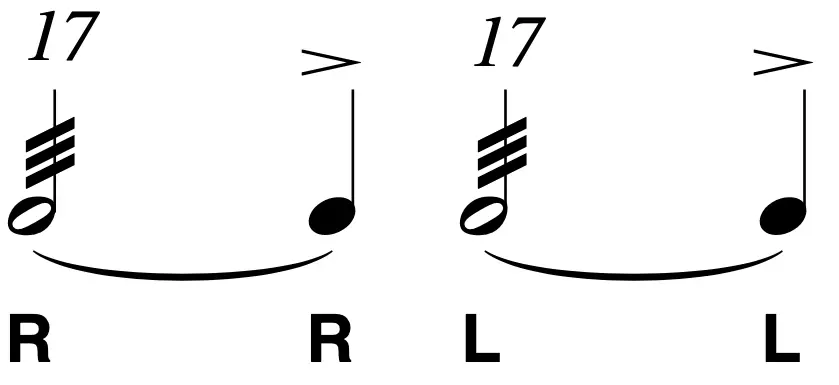Aside from the generic open roll, this is the closest the rolls come to sounding like proper drum rolls. If you have a two–beat crescendo and the tempo works, playing one of these can be very effective.
№ 16: Single Paradiddle
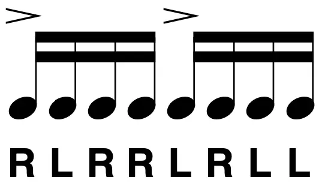The holy grail of rudiments. We all love the paradiddle. It’s inherently useful as a way of playing four–note patterns hand to hand, and orchestrating paradiddles around the kit will basically write fills on its own. It’s also very easy to go in different directions with the paradiddle, just by moving the accent around or by using one of the permutations (i.e. starting in a different spot of the paradiddles).
№ 17: Double Paradiddle
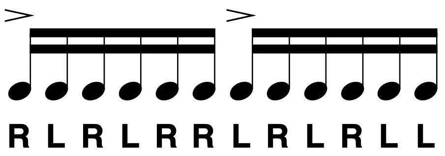The only time I play these as written is when I’m playing 16th note triplets and I need to start with the right and end on the left. I just wrote about a solo lick using a two accent double paradiddle: I reckon a two accented version is more useful overall. Permutations don’t seem to be very common in the drumming world.
There’s a well–known gag that involves playing a double paradiddle between the cymbal and snare to create a pretty dull Afro–Cuban 6/8 groove. I don’t really do this because it creates a pretty dull Afro–Cuban 6/8 groove.
№ 18: Triple Paradiddle
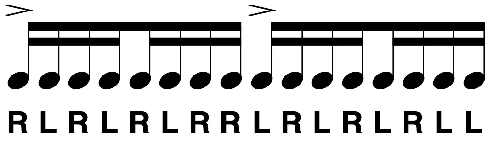I don’t get these. The triple paradiddle doesn’t even feel like a lick. It seems like a single paradiddle with no accents that has four singles in front of it.
№ 19: Paradiddle–diddle
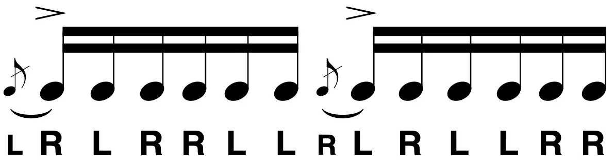One of my favorites. These just have such a unique lope to them. Easy to play, especially very fast. Permutations do exist (kind of) and can be very fun.
№ 20: Flam
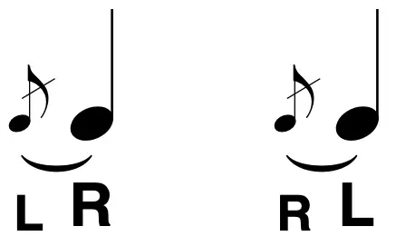Another one of the basic motions, and probably the least developed for the typical drummer. I don’t really regard these as licks, but rather as articulations; a way of playing a note, much like an accent. Speaking of that…
№ 21: Flam Accent
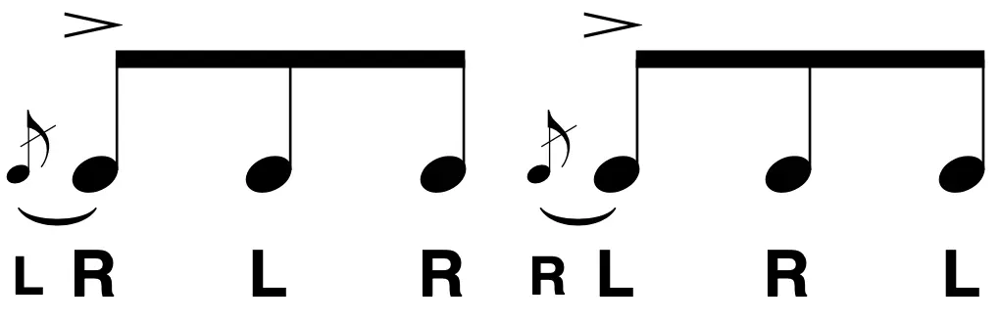Fun to play on a practice pad, but I don’t know what else to do with these. Another way to accentuate quarter notes I guess. You could stick the flam at the end of the beat, which could be swinging, but with the same limitations as the five stroke roll. At fast tempos, some drummers might have an easier time playing the rhythm as a Swiss army triplet.
№ 22: Flam Tap
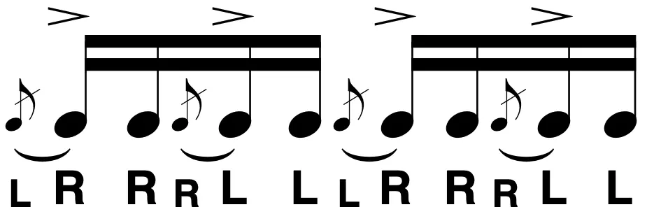Another lick that’s a lot of fun to chop around with on a practice pad, but not so much on the kit. I guess if you’re playing some funky, articulated thing on the ride bell, you could end a phrase with two beats of these split between the cymbal and snare. But you have to use them sparingly or else you’ll sound like a robot.
№ 23: Flamacue
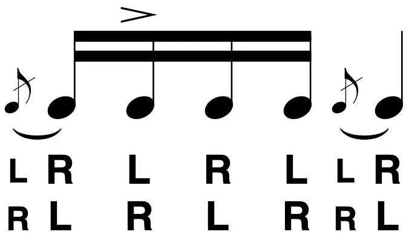There’s a very cool idea hiding in the flamacue: playing a flammed note followed immediately by an accented note. That’s the heart of the flamacue to me. But as far as playing the rhythm as written on the list of 40… remember what I said about sounding like a robot?
№ 24: Flam Paradiddle
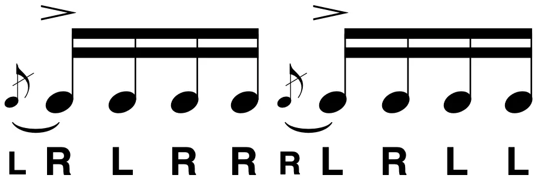While the single paradiddle is invaluable, the flam paradiddle just drains all of the fun out of the stock paradiddle.
№ 25: Single Flammed Mill
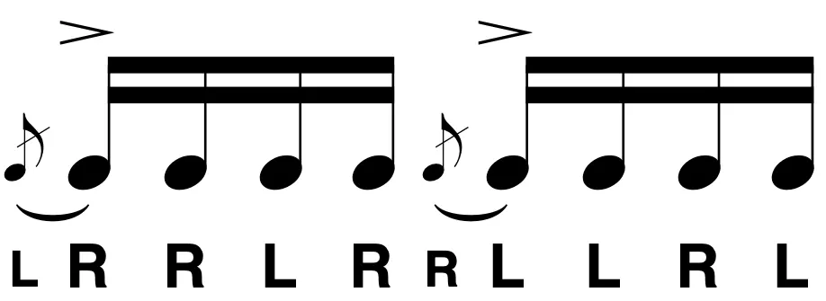These are nicer to play than the flam paradiddle, but they probably have the same utility as the flam tap.
№ 26: Flam Paradiddle–diddle
The flam paradiddle-diddle makes me wish the stock paradiddle-diddle was never invented. This is an incredibly clumsy lick to play, and it’s up there with the triple stroke roll in terms of foolishness.
Do you want to know something really weird? The flam paradiddle–diddle is much older than the stock paradiddle–diddle. I guess paradiddle–diddles weren’t really a thing people played until the mid–1900s, while the flammed variety goes back a few hundred years.
№ 27: Pataflafla
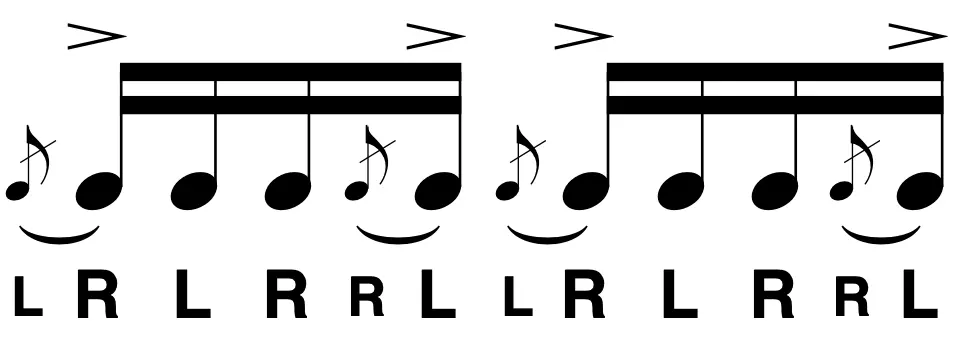Helpful for sambas, and not much else: unless you wanted to play these are triplets or something whacky like that.
№ 28: Swiss Army Triplet
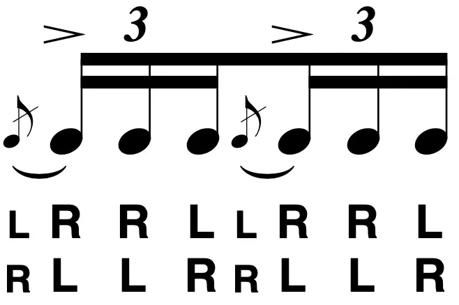A great lick. I’m a big fan of sweeping with the double stroke: playing two notes, on one hand, split between two different drums, e.g. a tom and the snare. The Swiss drag is also one of my favorite licks (a Swiss triplet with a drag on the second note).
№ 29: Inverted Flam Tap
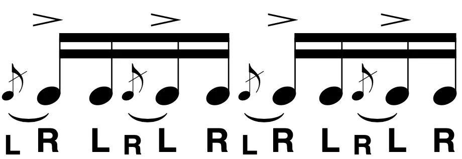One of the hardest (if not the hardest) rudiments on the list of 40. I keep telling myself that mastering the inverted flam tap is the key to developing gnarly Steve Gadd ghost note grooves… but I haven’t gotten there yet. It’s actually kind of a dumb lick: the same rhythm and phrasing of normal flam taps, but with a significantly more annoying sticking that’s just there to help you show off.
№ 30: Flam Drag
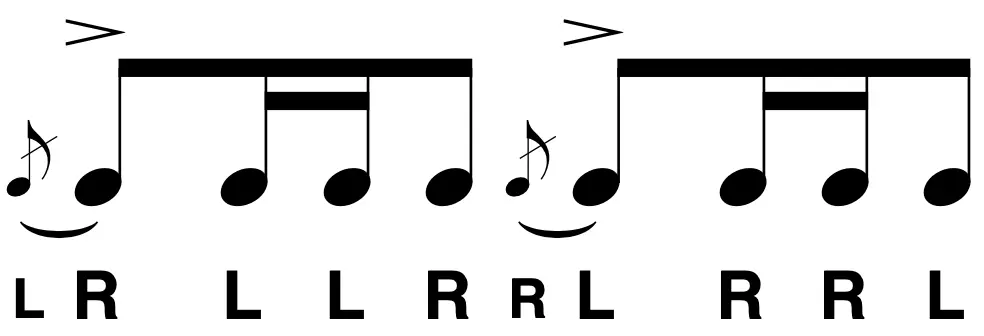Again, one of the hardest (if not the hardest) rudiments on the list of 40. Getting flam drags up to snuff is an important benchmark for many drummers, but I don’t care for these. I’d rather use the Swiss drag.
Here’s something that irks me: why do flams come before drags? Flams are much harder, and the flam drag introduces the drag before the actual list does, which doesn’t make sense to me.
№ 31: Drag
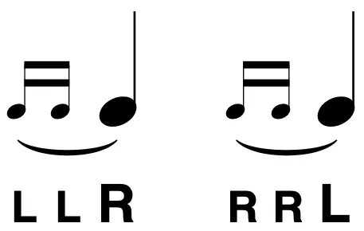The final fundamental movement of drumming, and much like the flam, I consider this an embellishment more so than a lick.
Because the list of 40 uses grace notes for most of the drag licks, it’s tough for a lot of drummers to conceive of how to use the drag: many feel like their playing needs to have space for the grace notes. I tend to mentally picture drags as tremolo slashes on notes that are in strict time. I wish we had separate terms for these two drag variations… but we don’t. Once upon a time, “ruff” could have been used for this, but those days are long gone.
№ 32: Single Drag Tap
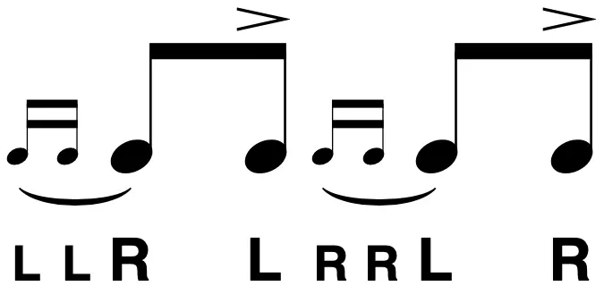Another way of accenting 8th note offbeats. Pretty much everyone uses a triplet variation though, turning the grace notes into a proper note with a tremolo slash. At this point, just see my comments on the other triplet–based licks.
№ 33: Double Drag Tap
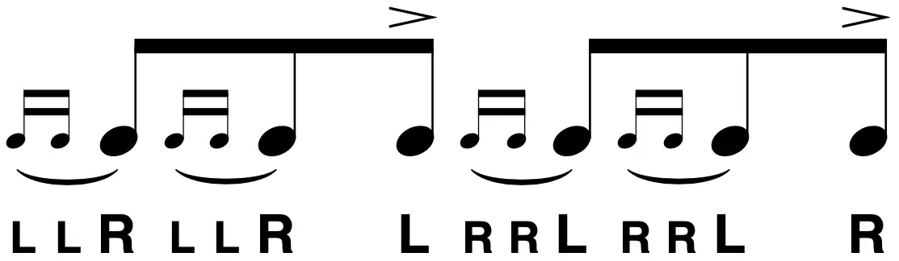If any drummer has played these on the kit, it was probably on accident. You can’t really turn the drags into proper notes unless you’re going for a weird quintuplet thing. At least that’s an idea.
№ 34: Lesson 25
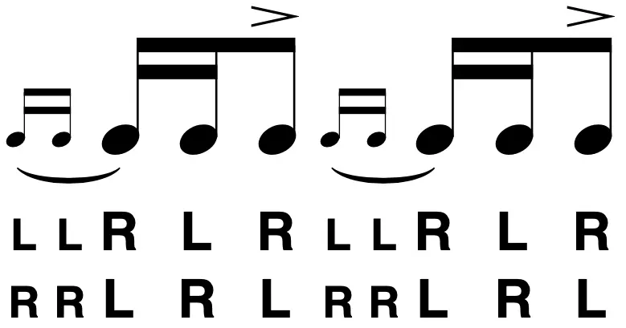Here we come to the 34th rudiment, with the dumbest name of the bunch. Watch this video if you want to know why we call this thing the “Lesson 25”. Yet another way of accenting the 8th note offbeat. It’s okay.
№ 35: Single Dragadiddle
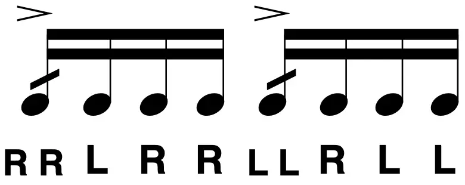A crackpot version of the paradiddle. Playing this just sounds like you’re doing something wrong.
№ 36: Drag Paradiddle #1
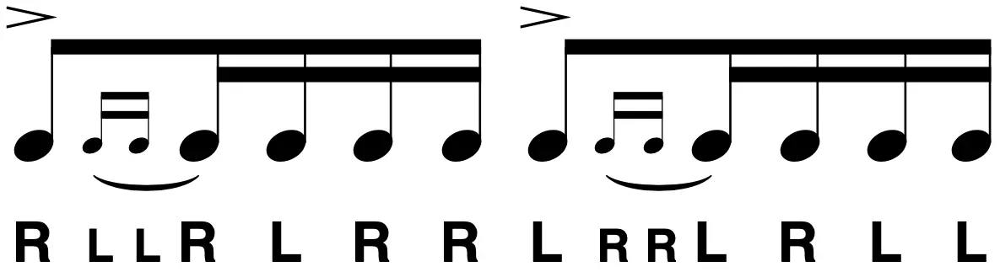This is basically a double paradiddle with a drag in place of the second note. I don’t really consider these very often, but there’s potential.
№ 37: Drag Paradiddle #2
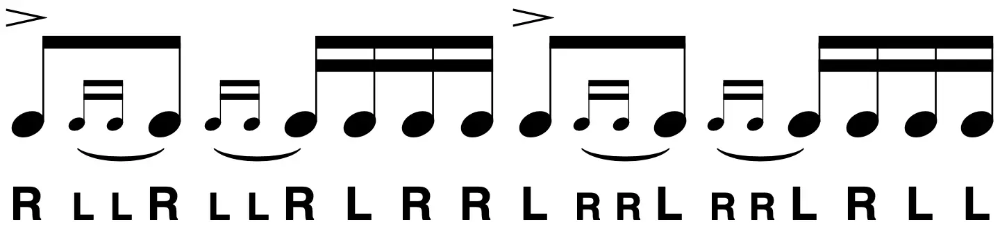This is basically a triple paradiddle with a drag in place of the second note. I don’t really consider these very often, because there’s no potential.
№ 38: Single Ratamacue
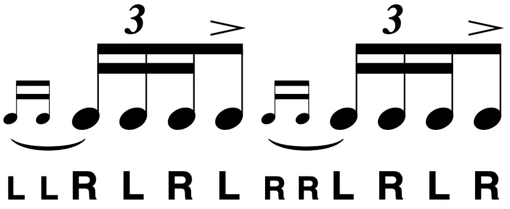A lot of drummers can’t stand ratamacues, but I don’t think they’re all that bad. It can be a fun way to end a run of triplets, and my band has a tune that features this rhythm as a reoccurring motif, which I play using the single ratamacue (I would link to the song, but it hasn’t been recorded yet since my band hasn’t been doing much of anything lately aside from making me depressed).
№ 39 & 40: Double Ratamacue, Triple Ratamacue
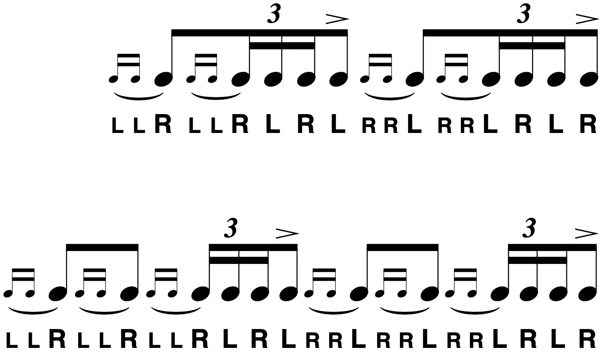…Okay, I’ll admit, these don’t really need to exist.
Tags: 2022 • Rants & Raves